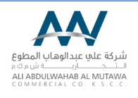
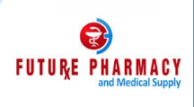
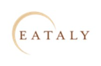
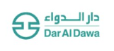
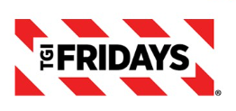
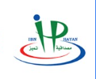
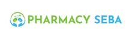

Business readiness
Projects delivered with structured execution, go-live confidence, and smoother user transition.
On Timedelivery against agreed project schedule
Cristal Technologies supports enterprise programs that improve readiness, execution quality, operational visibility, and long-term business performance.
Cristal Technologies has supported recognized brands across retail, distribution, food service, pharmacy, and healthcare trade environments.







Cristal Technologies played a key role in implementing the Oracle JD Edwards 9.2 Manufacturing Work Order and Inventory Management Product Allocation modules for AAW (Ali Abdulwahab Al Mutawa). The project was completed within scope and on schedule.
“The professionalism and technical knowledge exhibited by Cristal Technologies were outstanding. Their team’s dedication to delivering the solution on time and with precision greatly contributed to the success of this project. We highly recommend them for similar Oracle implementations.”
Mr. Mohamed F. Nosseir, Senior IT Business Partner at AAW
Senior Consultant Samir Harb brought strong technical expertise to the project, helping ensure a seamless implementation that allowed the client team to start using the solution immediately.
AAW has grown into a premier retail and wholesale company representing more than 200 leading global brands. Its business heritage is built on entrepreneurship, partnership, integrity, generosity, and community commitment.
Projects delivered with structured execution, go-live confidence, and smoother user transition.
Solutions aligned to real business processes to enable immediate use and reduce disruption.
Technical precision and disciplined implementation for enterprise environments that cannot afford instability.